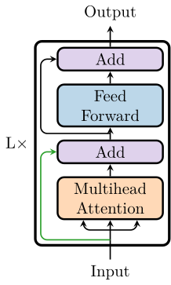
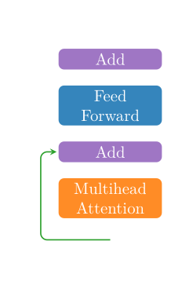
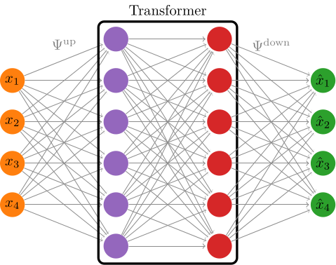
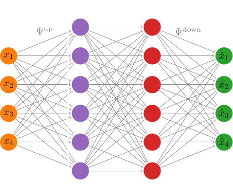

Standard Transformer
The transformer is a relatively modern neural network architecture [54] that has come to dominate the field of natural language processing (NLP, [87]) and replaced the previously dominant long-short term memory cells (LSTM, [83]). Its success is due to a variety of factors:
- unlike LSTMs it consists of very simple building blocks and hence is easier to interpret mathematically,
- it is very flexible in its application and the data it is fed with do not have to conform to a rigid pattern,
- transformers utilize modern hardware (especially GPUs) very effectively.
The transformer architecture is sketched below:
 
It is nothing more than a combination of a multihead attention layer and a residual neural network[1] (ResNet).
As was explained when we talked about the attention module, the attention layer performs a convex reweighting of the input sequence:
\[\mathrm{Attention}: Z \equiv [z^{(1)}, \ldots, z^{(T)}] \mapsto [\sum_{i=1}^Tp^{(1)}_iz^{(i)}, \ldots, \sum_{i=1}^Tp^{(T)}_iz^{(i)}] = \mathrm{Attention}(Z),\]
where the coefficients $p^{(i)}$ depend on $Z$ and are learnable. In the case of multihead attention a greater number of these reweighting coefficients are learned, but it is otherwise not much more complicated than single-head attention.
The green arrow in the figure above indicates that this first add connection can be left out. This can be specified via the keyword argument add_connection in MultiHeadAttention layer and the StandardTransformerIntegrator.
We should also note that such transformers have been used for the online phase in reduced order modeling before [85].
Classification Transformer
Instead of using the transformer for integration, it can also be used as a image classifier. In this case it is often referred to as "vision transformer" [88]. In this case we append a ClassificationLayer to the output of the transformer. This will be used in one of the examples.
The Upscaling
When using the transformer one typically also benefits from defining a transformer_dim that is greater than the system dimension and a corresponding upscaling_activation (see the docstring of StandardTransformerIntegrator).
 
In the figure above we call
\[ \Psi^\mathrm{up}:\mathbb{R}^{\mathtt{sys\_dim}}\to\mathbb{R}^{\mathtt{transformer\_dim}}\]
the upscaling layer and
\[ \Psi^\mathrm{down}:\mathbb{R}^{\mathtt{transformer\_dim}}\to\mathbb{R}^{\mathtt{sys\_dim}}\]
the downscaling layer. Both of these layers are dense layers with the activation function for the downscaling layer being the identity (for better expressivity) and the activation function for the upscaling layer can be specified via the keyword upscaling_activation.
GeometricMachineLearning does not have an implementation of such an upscaling for the volume-preserving transformer and the linear symplectic transformer. Symplectic liftings have however recently been discussed to learn higher-dimensional Hamiltonian representations of given data [72].
Library Functions
GeometricMachineLearning.StandardTransformerIntegrator — TypeStandardTransformerIntegrator(sys_dim)Make an instance of StandardTransformerIntegrator for a specific system dimension.
Here the standard transformer used as an integrator (see TransformerIntegrator).
It is a composition of MultiHeadAttention layers and ResNetLayer layers.
Arguments
The following are optional keyword arguments:
transformer_dim::Int = sys_dim: this is the dimension after the upscaling.n_blocks::Int = 1: the number ofResNetLayerblocks.n_heads::Int = sys_dim: the number of heads in the multihead attention layer.L::Int = 2: the number of transformer blocks.upscaling_activation = identity: the activation used in the upscaling layer.resnet_activation = tanh: the activation used for theResNetLayer.attention_activation = GeometricMachineLearning.VectorSoftmax(): the activation used for theMultiHeadAttentionlayer.add_connection:Bool = true: specifies if the input should be added to the output.
GeometricMachineLearning.Transformer — FunctionTransformer(dim, n_heads, L)Make an instance of the Transformer with n_heads for dimension dim and L blocks.
Arguments
Transformer takes the following optional keyword arguments:
activation = tanh: the activation function used for theResNetLayer.Stiefel::Bool = false: if the matrices $P^V$, $P^Q$ and $P^K$ should live on a manifold.add_connection::Bool = false: if the input should by added to the ouput after theMultiHeadAttentionlayer.use_bias::Bool = true: Specifies if theResNetLayershould use a bias.
GeometricMachineLearning.ClassificationTransformer — TypeClassificationTransformer(dl)Make an instance of the ClassificationTransformer based on an instance of DataLoader.
This is a transformer neural network for classification purposes. At the moment this is only used for training on MNIST, but can in theory be used for any classification problem.
Arguments
The optional keyword arguments are:
n_heads::Int=7: The number of heads in theMultiHeadAttention(mha) layers.L::Int=16: The number of transformer blocks.activation=softmax: The activation function.Stiefel::Bool=true: Whether the matrices in the mha layers are on theStiefelManifold.add_connection::Bool=true: Whether the input is appended to the output of the mha layer. (skip connection)
GeometricMachineLearning.assign_output_estimate — Functionassign_output_estimate(full_output, prediction_window)Crop the output to get the correct number of output vectors.
The function assign_output_estimate is closely related to the Transformer. It takes the last prediction_window columns of the output and uses them for the prediction.
i.e.
\[\mathbb{R}^{N\times{}T}\to\mathbb{R}^{N\times\mathtt{pw}}, \begin{bmatrix} z^{(1)}_1 & \cdots & z^{(T)}_1 \\ \cdots & \cdots & \cdots \\ z^{(1)}_n & \cdots & z^{(T})_n \end{bmatrix} \mapsto \begin{bmatrix} z^{(T - \mathtt{pw})}_1 & \cdots & z^{(T)}_1 \\ \cdots & \cdots & \cdots \\ z^{(T - \mathtt{pw})}_n & \cdots & z^{(T})_n\end{bmatrix} \]
If prediction_window is equal to sequence_length, then this is not needed.
References
- [54]
- A. Vaswani, N. Shazeer, N. Parmar, J. Uszkoreit, L. Jones, A. N. Gomez, L. Kaiser and I. Polosukhin. Attention is all you need. Advances in neural information processing systems 30 (2017).
- [85]
- A. Solera-Rico, C. S. Vila, M. Gómez, Y. Wang, A. Almashjary, S. Dawson and R. Vinuesa, $\beta$-Variational autoencoders and transformers for reduced-order modelling of fluid flows, arXiv preprint arXiv:2304.03571 (2023).
- 1A layer of type GeometricMachineLearning.ResNetLayer is nothing more than a neural network to whose output we again add the input, i.e. every ResNet is of the form $\mathrm{ResNet}(x) = x + \mathcal{NN}(x)$.